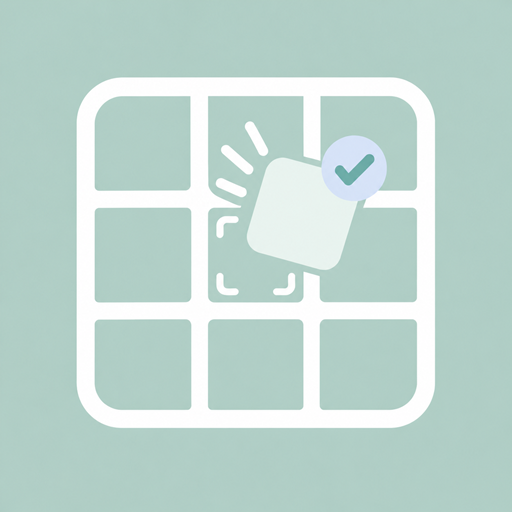
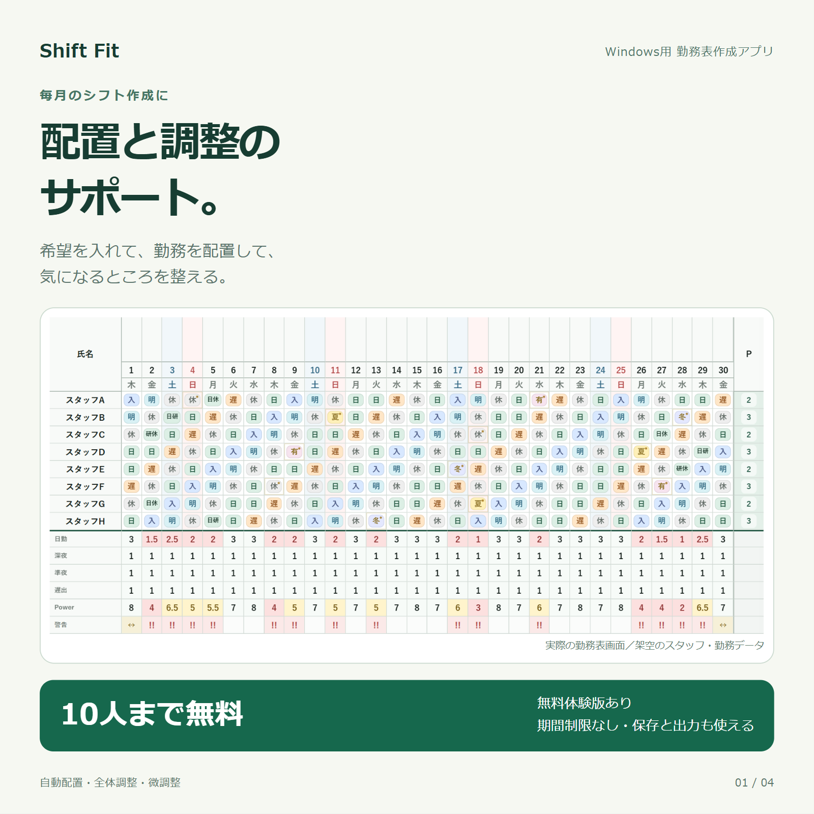
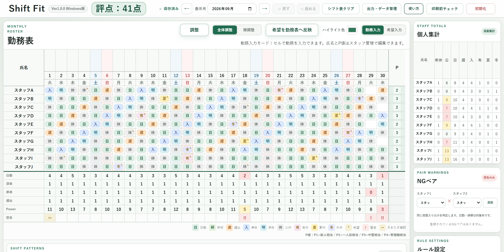

希望と勤務を入力
スタッフごとの希望勤務や、すでに決まっている勤務を月間勤務表へ入力できます。
Semi-automatic Shift Planning
無料体験版あり・製品版販売中
Shift Fit勤務条件を整理して、組み合わせを試して、最後は人が確かめる。看護管理者などのシフト作成者を支える、半自動の勤務表作成Windowsアプリです。

For whom
看護管理者をはじめ、希望勤務や必要人数、勤務の並びなど、複数の条件を確認しながら勤務表を作成する人を対象にしています。
Features
スタッフごとの希望勤務や、すでに決まっている勤務を月間勤務表へ入力できます。
登録した勤務パターンや条件を使い、空欄への自動配置と全体の自動調整を試せます。
連続勤務、翌日ルール、必要人数、NGペアなどを警告し、見直す場所を探しやすくします。
勤務記号、色、集計方法、スタッフの勤務回数上限などを設定できます。
スタッフ別の勤務回数と日ごとの配置人数を確認し、偏りや不足を見直せます。
勤務表、個人集計、日別集計、警告内容をCSVとして出力できます。
Final check
Shift Fitは勤務表作成を補助するツールです。警告、評点、自動配置、自動調整の結果が、施設の規則や実際の勤務条件をすべて満たすことを保証するものではありません。提出・確定前に、シフト作成者が必ず全体を確認してください。
Preview

Plans
無料体験版と製品版をBOOTHで配布・販売しています。購入前に、無料体験版でお使いのパソコンでの動作や操作感を確認できます。
スタッフ合計10人まで利用できます。利用期限はなく、保存・印刷・CSV出力も試せるWindowsアプリです。
BOOTHで無料体験版を見る無料体験版のスタッフ登録人数の制限を解除した製品版です。価格・配布内容・利用条件はBOOTHの商品ページで確認できます。
BOOTHで製品版を見るData & Privacy
入力した勤務表は、使用中のパソコンに保存されます。必要なデータはバックアップファイルとして保管してください。体験版のバックアップを製品版で復元すると、データを引き継げます。復元先のデータは置き換わるため、復元前にもバックアップを保存してください。個人情報の取り扱いは、施設の情報管理ルールを確認してください。
System requirements
Try Shift Fit
実際の勤務表を確定する前の確認用として、まずは匿名のサンプルデータで操作を試してください。
← 制作物一覧に戻る